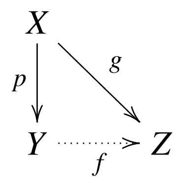

§ 22. The Quotient Topology¶
Definition 22.1 : Quotient Map
Let \(X\) and \(Y\) be topological spaces; let \(p: X \rightarrow Y\) be a surjective map. The map \(p\) is said to be a quotient map provided a subset \(U\) of \(Y\) is open in \(Y\) if and only if \(p^{-1}(U)\) is open in \(X\).
An equivalent condition is to require that a subset \(A\) of \(Y\) be closed in \(Y\) if and only if \(p^{-1}(A)\) is closed in \(X\).
To say that \(p\) is a quotient map is equivalent to saying that \(p\) is continuous and \(p\) maps saturated open sets of \(X\) to open sets of \(Y\) (or saturated closed sets of \(X\) to closed sets of \(Y\) ).
Definition 22.2 : Saturated Subset
We say that a subset \(C\) of \(X\) is saturated (with respect to the surjective map \(p: X \rightarrow Y\) ) if \(C\) contains every set \(p^{-1}(\{y\})\) that it intersects. Thus \(C\) is saturated if it equals the complete inverse image of a subset of \(Y\).
Definition 22.3 : Open Map / Closed Map
A map \(f: X \rightarrow Y\) is said to be an open map if for each open set \(U\) of \(X\), the set \(f(U)\) is open in \(Y\).
It is said to be a closed map if for each closed set \(A\) of \(X\), the set \(f(A)\) is closed in \(Y\).
It follows immediately from the definition that if \(p: X \rightarrow Y\) is a surjective continuous map that is either open or closed, then \(p\) is a quotient map.
Definition 22.4 : Quotient Topology
If \(X\) is a space and \(A\) is a set and if \(p: X \rightarrow A\) is a surjective map, then there exists exactly one topology \(\mathcal{T}\) on \(A\) relative to which \(p\) is a quotient map; it is called the quotient topology induced by \(p\).
The topology \(\mathcal{T}\) is of course defined by letting it consist of those subsets \(U\) of \(A\) such that \(p^{-1}(U)\) is open in \(X\).
Theorem 22.0
If \(X\) is a space and \(A\) is a set and if \(p: X \rightarrow A\) is a surjective map, the topology \(\mathcal{T}\) defined by letting it consist of those subsets \(U\) of \(A\) such that \(p^{-1}(U)\) is open in \(X\), is indeed a topology.
Proof
The sets \(\varnothing\) and \(A\) are open because \(p^{-1}(\varnothing)=\varnothing\) and \(p^{-1}(A)=X\). The other two conditions follow from the equations
Definition 22.5 : Quotient Space
Let \(X\) be a topological space, and let \(X^{*}\) be a partition of \(X\) into disjoint subsets whose union is \(X\). Let \(p: X \rightarrow X^{*}\) be the surjective map that carries each point of \(X\) to the element of \(X^{*}\) containing it. In the quotient topology induced by \(p\), the space \(X^{*}\) is called a quotient space of \(X\).
Given \(X^{*}\), there is an equivalence relation on \(X\) of which the elements of \(X^{*}\) are the equivalence classes. One can think of \(X^{*}\) as having been obtained by "identifying" each pair of equivalent points. For this reason, the quotient space \(X^{*}\) is often called an identification space, or a decomposition space, of the space \(X\).
We can describe the topology of \(X^{*}\) in another way. A subset \(U\) of \(X^{*}\) is a collection of equivalence classes, and the set \(p^{-1}(U)\) is just the union of the equivalence classes belonging to \(U\). Thus the typical open set of \(X^{*}\) is a collection of equivalence classes whose union is an open set of \(X\).
Example
Let \(X\) be the rectangle \([0,1] \times[0,1]\). Define a partition \(X^{*}\) of \(X\) as follows: It consists of all the one-point sets \(\{x \times y\}\) where \(0<x<1\) and \(0<y<1\), the following types of two-point sets:
and the four-point set
Typical saturated open sets in \(X\) are pictured by the shaded regions in Figure 22.5; each is an open set of \(X\) that equals a union of elements of \(X^{*}\). The image of each of these sets under \(p\) is an open set of \(X^{*}\), as indicated in Figure 22.6. This description of \(X^{*}\) is just the mathematical way of saying what we expressed in pictures when we pasted the edges of a rectangle together to form a torus.

Theorem 22.1
Let \(p: X \rightarrow Y\) be a quotient map; let \(A\) be a subspace of \(X\) that is saturated with respect to \(p\); let \(q: A \rightarrow p(A)\) be the map obtained by restricting \(p\).
-
If \(A\) is either open or closed in \(X\), then \(q\) is a quotient map.
-
If \(p\) is either an open map or a closed map, then \(q\) is a quotient map.
Proof
Step 1. We verify first the following two equations:
To check the first equation, we note that since \(V \subset p(A)\) and \(A\) is saturated, \(p^{-1}(V)\) is contained in \(A\). It follows that both \(p^{-1}(V)\) and \(q^{-1}(V)\) equal all points of \(A\) that are mapped by \(p\) into \(V\). To check the second equation, we note that for any two subsets \(U\) and \(A\) of \(X\), we have the inclusion
To prove the reverse inclusion, suppose \(y=p(u)=p(a)\), for \(u \in U\) and \(a \in A\). Since \(A\) is saturated, \(A\) contains the set \(p^{-1}(p(a))\), so that in particular \(A\) contains \(u\). Then \(y=p(u)\), where \(u \in U \cap A\).
Step 2. Now suppose \(A\) is open or \(p\) is open. Given the subset \(V\) of \(p(A)\), we assume that \(q^{-1}(V)\) is open in \(A\) and show that \(V\) is open in \(p(A)\).
Suppose first that \(A\) is open. Since \(q^{-1}(V)\) is open in \(A\) and \(A\) is open in \(X\), the set \(q^{-1}(V)\) is open in \(X\). Since \(q^{-1}(V)=p^{-1}(V)\), the latter set is open in \(X\), so that \(V\) is open in \(Y\) because \(p\) is a quotient map. In particular, \(V\) is open in \(p(A)\).
Now suppose \(p\) is open. Since \(q^{-1}(V)=p^{-1}(V)\) and \(q^{-1}(V)\) is open in \(A\), we have \(p^{-1}(V)=U \cap A\) for some set \(U\) open in \(X\). Now \(p\left(p^{-1}(V)\right)=V\) because \(p\) is surjective; then
The set \(p(U)\) is open in \(Y\) because \(p\) is an open map; hence \(V\) is open in \(p(A)\).
Step 3. The proof when \(A\) or \(p\) is closed is obtained by replacing the word "open" by the word "closed" throughout Step 2.
Theorem 22.1.1
The composite of two quotient maps is a quotient map; this fact follows from the equation
On the other hand, products of maps, and the Hausdorff condition does not behave well.
Theorem 22.2
Let \(p: X \rightarrow Y\) be a quotient map. Let \(Z\) be a space and let \(g: X \rightarrow Z\) be a map that is constant on each set \(p^{-1}(\{y\})\), for \(y \in Y\).
Then \(g\) induces a map \(f: Y \rightarrow Z\) such that \(f \circ p=g\).
The induced map \(f\) is continuous if and only if \(g\) is continuous.
\(f\) is a quotient map if and only if \(g\) is a quotient map.

Proof
For each \(y \in Y\), the set \(g\left(p^{-1}(\{y\})\right)\) is a one-point set in \(Z\) (since \(g\) is constant on \(p^{-1}(\{y\}))\). If we let \(f(y)\) denote this point, then we have defined a map \(f: Y \rightarrow Z\) such that for each \(x \in X, f(p(x))=g(x)\). If \(f\) is continuous, then \(g=f \circ p\) is continuous. Conversely, suppose \(g\) is continuous. Given an open set \(V\) of \(Z, g^{-1}(V)\) is open in \(X\). But \(g^{-1}(V)=p^{-1}\left(f^{-1}(V)\right)\); because \(p\) is a quotient map, it follows that \(f^{-1}(V)\) is open in \(Y\). Hence \(f\) is continuous.
If \(f\) is a quotient map, then \(g\) is the composite of two quotient maps and is thus a quotient map. Conversely, suppose that \(g\) is a quotient map. Since \(g\) is surjective, so is \(f\). Let \(V\) be a subset of \(Z\); we show that \(V\) is open in \(Z\) if \(f^{-1}(V)\) is open in \(Y\). Now the set \(p^{-1}\left(f^{-1}(V)\right)\) is open in \(X\) because \(p\) is continuous. Since this set equals \(g^{-1}(V)\), the latter is open in \(X\). Then because \(g\) is a quotient map, \(V\) is open in \(Z\).
Corollary 22.3
Let \(g: X \rightarrow Z\) be a surjective continuous map. Let \(X^{*}\) be the following collection of subsets of \(X\) :
Give \(X^{*}\) the quotient topology.
- The map \(g\) induces a bijective continuous map \(f: X^{*} \rightarrow Z\), which is a homeomorphism if and only if \(g\) is a quotient map.
- If \(Z\) is Hausdorff, so is \(X^{*}\).

Proof
By Theorem 22.2, \(g\) induces a continuous map \(f: X^{*} \rightarrow Z\); it is clear that \(f\) is bijective. Suppose that \(f\) is a homeomorphism. Then both \(f\) and the projection map \(p: X \rightarrow X^{*}\) are quotient maps, so that their composite \(q\) is a quotient map. Conversely, suppose that \(g\) is a quotient map. Then it follows from the preceding theorem that \(f\) is a quotient map. Being bijective, \(f\) is thus a homeomorphism.
Suppose \(Z\) is Hausdorff. Given distinct points of \(X^{*}\), their images under \(f\) are distinct and thus possess disjoint neighborhoods \(U\) and \(V\). Then \(f^{-1}(U)\) and \(f^{-1}(V)\) are disjoint neighborhoods of the two given points of \(X^{*}\).
Example
Let \(X\) be the subspace of \(\mathbb{R}^{2}\) that is the union of the line segments \([0,1] \times\) \(\{n\}\), for \(n \in \mathbb{Z}_{+}\), and let \(Z\) be the subspace of \(\mathbb{R}^{2}\) consisting of all points of the form \(x \times(x / n)\) for \(x \in[0,1]\) and \(n \in \mathbb{Z}_{+}\). Then \(X\) is the union of countably many disjoint line segments, and \(Z\) is the union of countably many line segments having an end point in common.
Define a map \(g: X \rightarrow Z\) by the equation \(g(x \times n)=x \times(x / n)\); then \(g\) is surjective and continuous. The quotient space \(X^{*}\) whose elements are the sets \(g^{-1}(\{z\})\) is simply the space obtained from \(X\) by identifying the subset \(\{0\} \times \mathbb{Z}_{+}\)to a point. The map \(g\) induces a bijective continuous map \(f: X^{*} \rightarrow Z\). But \(f\) is not a homeomorphism.
To verify this fact, it suffices to show that \(g\) is not a quotient map. Consider the sequence of points \(x_{n}=(1 / n) \times n\) of \(X\). The set \(A=\left\{x_{n}\right\}\) is a closed subset of \(X\) because it has no limit points. Also, it is saturated with respect to \(g\). On the other hand, the set \(g(A)\) is not closed in \(Z\), for it consists of the points \(z_{n}=(1 / n) \times\left(1 / n^{2}\right)\); this set has the origin as a limit point.

Example
The product of two quotient maps need not be a quotient map.
Let \(X=\mathbb{R}\) and let \(X^{*}\) be the quotient space obtained from \(X\) by identifying the subset \(\mathbb{Z}_{+}\)to a point \(b\); let \(p: X \rightarrow X^{*}\) be the quotient map. Let \(\mathbb{Q}\) be the subspace of \(\mathbb{R}\) consisting of the rational numbers; let \(i: \mathbb{Q} \rightarrow \mathbb{Q}\) be the identity map. We show that
is not a quotient map.
For each \(n\), let \(c_{n}=\sqrt{2} / n\), and consider the straight lines in \(\mathbb{R}^{2}\) with slopes 1 and -1 , respectively, through the point \(n \times c_{n}\). Let \(U_{n}\) consist of all points of \(X \times \mathbb{Q}\) that lie above both of these lines or beneath both of them, and also between the vertical lines \(x=n-1 / 4\) and \(x=n+1 / 4\). Then \(U_{n}\) is open in \(X \times \mathbb{Q}\); it contains the set \(\{n\} \times \mathbb{Q}\) because \(c_{n}\) is not rational.
Let \(U\) be the union of the sets \(U_{n}\); then \(U\) is open in \(X \times \mathbb{Q}\). It is saturated with respect to \(p \times i\) because it contains the entire set \(\mathbb{Z}_{+} \times\{q\}\) for each \(q \in \mathbb{Q}\). We assume that \(U^{\prime}=(p \times i)(U)\) is open in \(X^{*} \times \mathbb{Q}\) and derive a contradiction.
Because \(U\) contains, in particular, the set \(\mathbb{Z}_{+} \times 0\), the set \(U^{\prime}\) contains the point \(b \times 0\). Hence \(U^{\prime}\) contains an open set of the form \(W \times I_{\delta}\), where \(W\) is a neighborhood of \(b\) in \(X^{*}\) and \(I_{\delta}\) consists of all rational numbers \(y\) with \(|y|<\delta\). Then
Choose \(n\) large enough that \(c_{n}<\delta\). Then since \(p^{-1}(W)\) is open in \(X\) and contains \(\mathbb{Z}_{+}\), we can choose \(\epsilon<1 / 4\) so that the interval \((n-\epsilon, n+\epsilon)\) is contained in \(p^{-1}(W)\). Then \(U\) contains the subset \(V=(n-\epsilon, n+\epsilon) \times I_{\delta}\) of \(X \times \mathbb{Q}\). But the figure makes clear that there are many points \(x \times y\) of \(V\) that do not lie in \(U\) ! (One such is the point \(x \times y\), where \(x=n+\frac{1}{2} \epsilon\) and \(y\) is a rational number with \(\left|y-c_{n}\right|<\frac{1}{2} \epsilon\).)